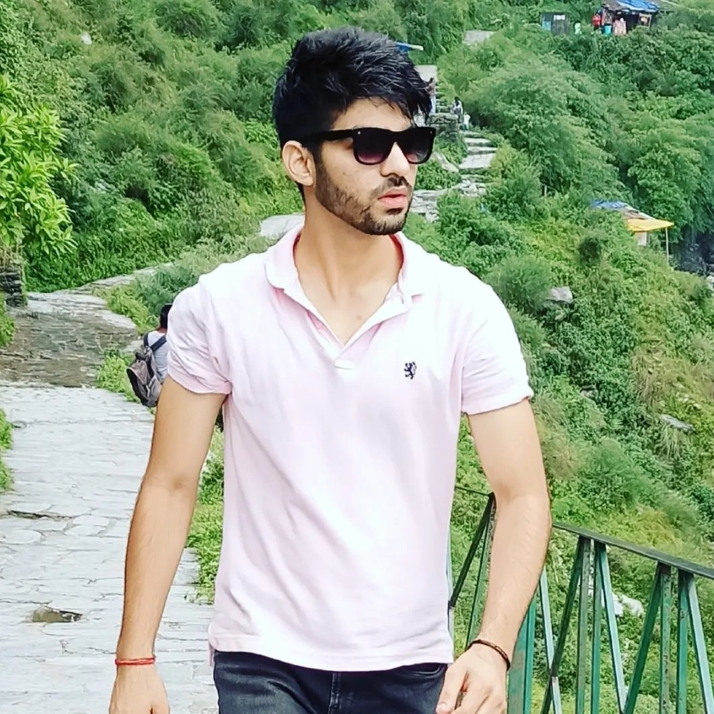
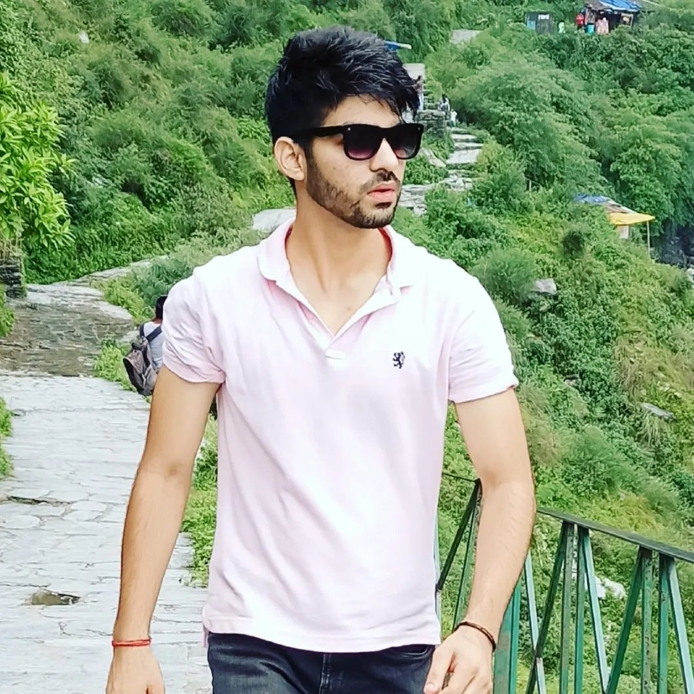

🥹 SORRY BHAIYO 🥹
An appology to my dearest brothers
To my brothers,
 


Hello Bhai log 👋, kaise ho tum sab? So happy to know about you 🥹 Saurav tu to ab Doctor Sahab ban gaya hai, or Dheeraj tu kaisa hai bhai? Bagha Bhai aapke kya haal chaal? I hope you all are doing good in your life. I know this is very weird and strange but I need to do this.
I needed to experess myself but was not sure how to do it in the first place. I am not sure what I am doing but I am just writing my thoughts and feelings here, hope you will understand me :)
Writing this appology letter for not being in contact with you all this while. Firstly a very very big SORRY from the bottom of my heart, I know it's been a long time since we last
talked or even had a text conversation and I take full responsiblity for it. It was me who was not in contact with you guys, it was me who didn't reached out to you, it was me who didn't responded despite you being repeatedly trying to reach out to me :(
I know it was me and only me but the circumstances were as such, the situation was not very stable, a lot was going on with life but I better not discuss those here.
I don't want to make any excuses and I really feel guilty of myself for not being in touch with you for this long,
you know what Maine bhot baar tum ko contact karne ke bare main socha but ek dar tha man main, ek guilt tha :( Main soch ta tha ek din personally mil ke(Hopefully will meet soon) sorry bolunga apne bhaiyo ko, lekin vo khete hain na chizo ko jada lamba khichna nahi chaiye to bas I am writing this.
I am not sure but I am very emotional right now 🥹 You know it all started back in 2013 when I first met you guys in IXth standard and since then we have shared this bond of brotherhood. It's 2024 now and you know what baffles me is the fact its' been 10 fuckin years of our friendship, our brotherhood.
While one may agree that past few years the situation was not very stable but despite being not in contact I always remembered you, you all remain in my heart and will continue to be in my heart for life long.
This New Year I want to do a fresh start, a restart to this brotherhood which we have shared for this long. I am not sure how tf do I express my feelings for you guys,
you all are my jaan, my brothers 🙂 I can not even imagine myself without your friendship, your brotherhood,
your support. There's so much to say, so much to talk but I will save it for some other day.
Thank you, thank you so much for always standing by my side.
I hope you will understand me and my feelings for you guys. I hope you will forgive me for not being in contact with you all this time, I hope you are getting emotional too 🥹 I hope you miss me too 🫠
I hope our brotherhood will remain the same throughout our lifespan ;)
P.S: Not having courage to face you all after so long and after being in the drafts for so long, this page will be automatically going live on 1st Jan 2024. If you have made this far, drop a 👋 into the whatsapp chat :)
Also, sorry for this shitty UI, I suck at frontend LOL 😐
Your brother,
Rohit